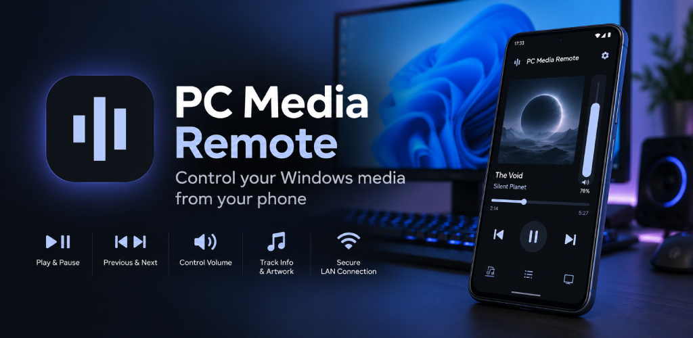

Download & Run
Download the PC Media Remote Companion and run it on your Windows PC.

ANDROID + WINDOWS
Use the Android app on your phone together with the free portable Companion on your Windows PC. Pair them once with a QR code and control your media over your local network.
HOW IT WORKS
Download the PC Media Remote Companion and run it on your Windows PC.
Open PC Media Remote on your Android phone and scan the QR code shown by the Companion.
Control playback, track position and Windows volume directly from your phone.
FEATURES
ANDROID + WINDOWS
No cloud account is required for normal media control. PC Media Remote communicates with the Companion over your local network.